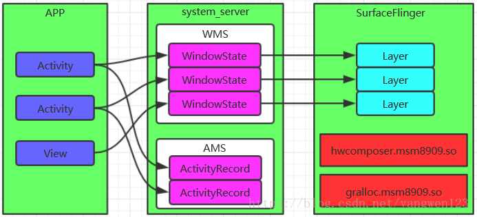
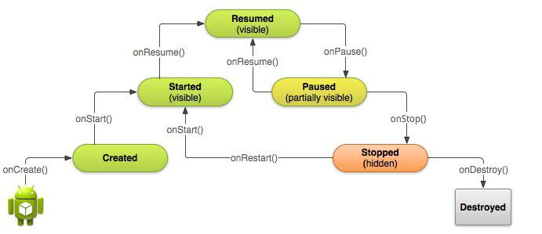
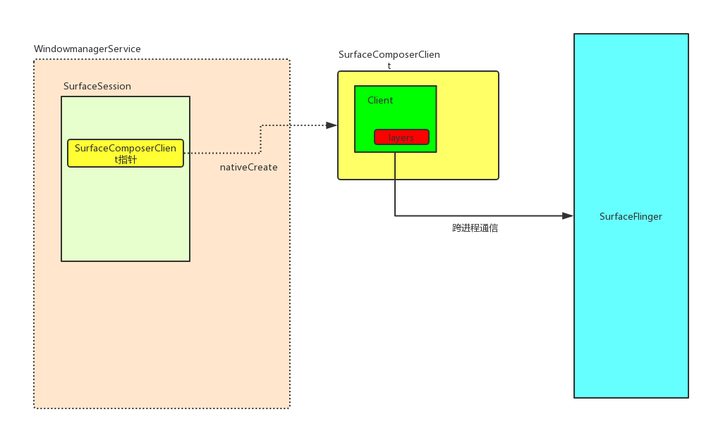
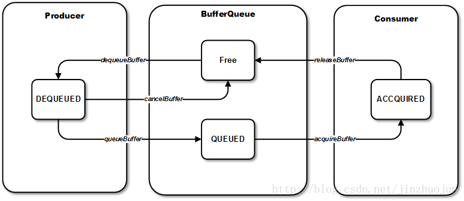
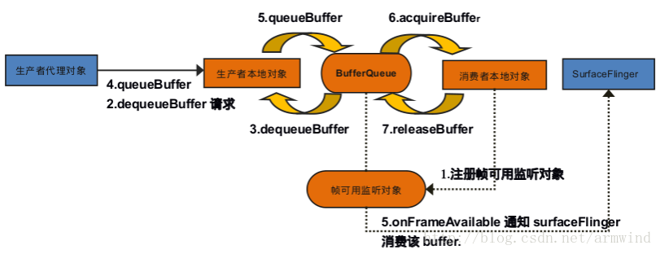

本篇对Android图形显示框架做一个概述，内容主要包含：SurfaceSession创建和销毁（添加/删除窗口），Surface创建和销毁，BufferQueue创建，以及BufferQueue的dequeueBuffer和queueBuffer、acquire和release大致流程梳理。
显示框架概述
Android与用户进行图形界面的交互，例如各个应用程序，他们的对话框、按钮、菜单等图形窗口。这些窗口的管理都是由WindowManager负责，窗口管理位于Java层，真正的实现者是运行在System_server进程空间中的WindowManagerService。
1 | /** |
应用程序负责修改绘制窗口中的内容，而WindowManager负责窗口的生命周期、几何属性、坐标变换信息、用户输入焦点、动画等功能。他还管理着窗口状态的变化，如窗口位置、大小、透明度以及Z-order（前后遮盖顺序）等一系列的逻辑判断。这些WindowManager功能由一系列接口或类构成，包括ViewManager、WindowManager、WindowManagerImpl、WindowManagerService等。
SurfaceFlinger负责分配应用程序所需的图形缓冲区，并对系统中的整个图形窗口进行composition（合成）。
最终，图形窗口会更新显示到Display显示器上。

显示过程的三个进程
Android显示的整个过程由App进程、System_server进程、SurfaceFlinger进程一起配合完成。
App进程： App需要将自己的内容显示在屏幕上，所以需要负责发起Surface创建的请求。同时触发对控件的测量、布局、绘制以及输入事件的派发处理，这些主要在ViewRootImpl中触发；
System_server进程： 主要是WindowManagerService，负责接收App请求，同时和SurfaceFlinger建立连接，向SurfaceFlinger发起具体请求创建Surface，并且创建Surace的辅助管理类SurfaceControl（和window一一对应）(AMS作用是统一调度所有App的Activity)；
SurfaceFlinger： 为App创建具体的Surface，在SurfaceFLinger对应成Layer，然后负责管理、合成所有图层，最终显示。

Activity、Window、PhoneWindow、DecorView、View的对应关系
- Window：每一个Activity都包含一个Window对象（抽象类，提供了绘制窗口的一组通用API），通常由PhoneWindow实现。
在Activity.java中定义：private Window mWindow;
- 一个Activity对应创建一个Surface
- PhoneWindow:继承于Window，是Window类的具体实现。该类内部包含了一个DecorView对象，该DecorView对象是所有应用窗口（Activity界面）的根View。
简而言之，PhoneWindow类是把一个FrameLayout类，即DecorView对象进行一定的包装，将他作为应用窗口的根View，并提供一组通用的窗口操作接口。
PhoneWindow是Android中最基本的窗口系统，每个Activity都会创建一个PhoneWindow对象，是Activity和整个View系统交互的接口。
在Activity.java的attach函数实例化：mWindow = new PhoneWindow(this, window, activityConfigCallback);
- DecorView：PhoneWindow构造函数中定义，继承FrameLayout类，是所有应用窗口的根View。
在PhoneWindow.java中定义，构造函数中初始化：private DecorView mDecor;
相关debug方法：
- adb shell dumpsys activity
- adb shell dumpsys window
![window包含关系]](phonewindow.png)
Activity生命周期
Activity onResume添加窗口
onCreate方法中调用setContentView来设置布局，此时只是完成了View Tree的创建。此处参考HWUI绘制文章
真正通知WMS添加窗口，是在回调onResume完成的。
调用onResume的方法在ActivityThread.java中是handleResumeActivity。之后调用到WMS.java的addWindow。

App进程中完成添加窗口操作
- 当一个新窗口(Window)被创建的时候，在ActivityThread.java的
handleResumeActivity中调用addView(),然后调用到WindowManagerImpl的addView()函数。
1 |
|
- 这个函数将实际操作委托给mGlobal成员完成，这个成员随着WindowManagerImpl的创建而被初始化：
private final WindowManagerGlobal mGlobal = WindowManagerGlobal.getInstance();
WindowManagerGlobal是一个单例模式，即一个进程中最多仅有一个WindowManagerGlobal实例。
- 调用mGlobal的addView函数后，将会创建一个ViewRootImpl对象，并且将窗口的控件、布局参数、ViewRootImpl对象入参到setView函数中，这个动作将导致ViewRootImpl向WMS添加新的窗口、申请Surface创建、绘制动作等。这才真正意义的完成了窗口的添加操作。
1 | public void addView(View view, ViewGroup.LayoutParams params, |
窗口移除序列图（Activity destroy）
窗口被删除，Activity执行了handleDestroyActivity函数：

Surface Destroy（Activity pause或者stop状态）
可以结合以下
Surface创建部分一起梳理，针对的情况是Surface被destroy，从framework/base到SurfaceFlinger模块Layer析构的流程。
但是就Activity而言，并没有被销毁，而是类似按了home键返回桌面，或者在后台运行的状态，具体可以通过日志观察。

SurfaceSession创建
此处是接着上面添加窗口的流程，分为以下两部分。
mGlobal.addView中创建ViewRootImpl对象
- 新建ViewRootImpl对象的时候，调用构造函数，会从WindowManagerGlobal中获取一个窗口session。
mWindowSession = WindowManagerGlobal.getWindowSession();
- 在WindowManagerGlobal中会通过Binder IPC跨进程创建一个session。
Session主要用于进程间通信，其他应用程序想要和WMS通信就需要经过Session，每个应用程序进程都会对应一个Session，WMS保存这些Session用来记录所有向WMS提出窗口管理服务的客户端。
1 |
|
- WMS继承IWindowManager.Stub，调用到openSessio函数，创建一个新的session对象, 返回值是IWindowSession类型。用于在APP进程和WMS之间建立联系。
1 |
|
mGlobal.addView中调用ViewRootImpl.setView
在前面mGlobal创建ViewRootImpl对象之后，会调用ViewRootImpl对象的setView，然后通知到WMS创建一个SurfaceSession，建立WindowManagerService和Surfacelinger的连接。
一个SurfaceSession代表着一个到SurfaceFlinger的连接会话，在这个连接会话里，可以创建一个或多个surface，最后这些surface被合成送到Display上显示。
大致过程：（查看下面的序列图）
- 在setView()中调用mWindowSession.addToDisplay, mWindowSession是IWindowSession接口类型，而Session.java实现了该接口；
- Session.java 中调用mService.addWindow(…), mService是WMS类型；
- WMS.java的addWindow()创建WindowState对象win，调用win.attach()
- frameworks/base/services/core/java/com/android/server/wm/WindowState.java 调用attach
- frameworks/base/services/core/java/com/android/server/wm/Session.java 调用windowAddedocked，创建SurfaceSession类型的mSurfaceSession
- frameworks/base/core/java/android/view/SurfaceSession.java 构造函数调用JNI，然后在android_view_SurfaceSession.cpp中的nativeCreate创建SurfaceComposerClient, 调用Refase的incStrong然后实现onFirstRef,通过调用CreateConnection()建立和SF的连接;
- SF.cpp 调用CreateConnection()返回SF的Client类的Binder代理BpSurfaceComposerClient;
Surface创建
App进程请求创建Surface
Surface是Android图形系统的核心部分，图形界面上的一个窗口或对话框等都对应着一个Surface。
而这个Surface是一块绘制区域的抽象，它对应着Server服务端Surfacelinger中的一个图层Layer，这个图层的背后是一块图形缓冲区GraphicBuffer，Client客户端的应用程序的UI使用软件绘制、硬件绘制在Surface上各种渲染操作时，绘制操作的结果其实也就是在该图形缓冲区中。
这部分的内容是梳理Surface创建的过程。
- 在ViewRootImpl对象中，
setView到requestLayout函数请求布局，到调用scheduleTraversals，该函数里面在Choreographer.java层层调用到Message msg = mHandler.obtainMessage(MSG_DO_SCHEDULE_CALLBACK, action);
此处的action即是新的线程启动。
- 启动ViewRootImp中单独的线程TraversalRunnable，然后调用到关键函数
performTraversals()。
这个关键函数有两个主要的函数:
- relayoutWindow() ->布局窗口
- performDraw() ->绘制渲染
请求创建Surface就从relayoutWindow函数开始。
在这个方法中调用IWindowSession的relayout，会调用到Session.java，然后调用到WMS的relayoutWindow从而达到跨进程：（流程图查看下面单独章节的序列图）
1 | private int relayoutWindow(WindowManager.LayoutParams params, int viewVisibility, |
System_server进程 —— WMS
- 跨进程到WMS后，从relayoutWindow函数调用到
createSurfaceControl(outSurfaceControl)。
（1）然后先是在WindowStateAnimator创建一个WindowSurfaceController对象，作为调用到WindowStateAnimator.java的createSurfaceLocked函数的返回值。
在createSurfaceLocked函数中，会new一个WindowSurfaceController对象，从而调用他的构造函数。
在他的构造函数中会创建一个SurfaceControl内部类Builder对象，调用该对象的build函数；
(2) WMS.java中调用WindowStateAnimator.java的createSurfaceLocked函数之后，会执行以下逻辑：
a. 如果surfaceController不为空，调用WindowSurfaceController的getSurfaceControl；
b. WindowSurfaceController.java调用getSurfaceControl, outSurfaceControl.copyFrom(mSurfaceControl);，而mSurfaceControl就是之前的构造函数创建的。此处的copyFrom会经过JNI调用到Native层, 然后读取SurfaeControl。
在Builder内部类的build函数中
创建Java层的SurfaceControl对象，在SurfaceControl的构造函数中调用JNI层的nativeCreate函数；android_view_SurfaceControl.cpp的nativeCreate函数会调用SurfaceComposerClient.cpp的
createSurfaceChecked函数，创建一个surface（实际上是SurfaceControl），然后将surface返回。

SurfaceFlinger进程
SurfaceComposerClinet.cpp位于frameworks/native/libs/gui模块。而libgui库主要被JNI层中的代码调用，从而和Surfacelinger进程进行交互，可以看做是Java层的Bn端，是SurfaceFlinger的Bp端。
比如此处的SurfaceComposerClinet通过Binder IPC（ISurfaceComposerClinet.cpp），跨进程到SurfaceFlinger进程。
- SurfaceComposerClinet作为Bp客户端调用：
1 | status_t SurfaceComposerClient::createSurfaceChecked(const String8& name, uint32_t w, uint32_t h, |
- Bn服务端是surfaceflinger模块的Client.cpp，此时跨进程到SurfaceFlinger进程，调用createSurface，从而请求到SurfaceFlinger创建Surface：
1 | status_t Client::createSurface(const String8& name, uint32_t w, uint32_t h, PixelFormat format, |
- 在SurfaceFlinger::createLayer中创建Layer（创建surface的请求到SurfaceFlinger进程中就是创建Layer），创建的Layer有四种：
（1）createBufferQueueLayer
（2）createBufferStateLayer
（3）createColorLayer
（4）createContainerLayer
通常情况下创建的是第一种Layer——BufferQueueLayer（在P中是BufferLayer），会创建一个<sp>BufferQueueLayer强指针对象。
1 | status_t SurfaceFlinger::createBufferQueueLayer(const sp<Client>& client, const String8& name, |
序列图
该序列图包含上面部分的流程，包含APP进程和WMS进程之间的Session创建、SurfaceSession创建、Surface创建。

BufferQueue
关于BufferQueue只大致梳理他的创建流程，以及在渲染过程中的dequeuebuffer和queuebuffer流程、在合成过程中的acquire和release流程。关于和GraphicsBuffer和再底层的逻辑，暂时不梳理。
BufferQueue概述
创建BuffeQueueLayer对象的onFirstRef中会创建一个BufferQueue。BufferQueue是buffer流转的中转站。具体分成四个步骤：
- 生产者dequeue一块buffer，buffer状态->DEQUEUED，持有者->Producer，之后生产者可以填充数据（渲染绘制）。在dequeueBuffer之前，buffer状态是free，持有者是BufferQueue；
- 生产者填充完数据后，进行queue操作，buffer->QUEUED，持有者->BufferQueue。操作后producer会回调BufferQueue的onFrameAvailable函数，通知消费者有可用的buffer;
- 消费者进行acquire取出Buffer，buffer->ACQUIRED，持有者->Consumer;
- 消费者消费完这块buffer（已经合成），进行release操作释放，归还给BufferQueue

BufferQueue状态
- DEQUEUED 状态：
Producer dequeue一个Buffer后，这个Buffer就变为DEQUEUED状态，release Fence发信号后，Producer就可以修改Buffer的内容，我们称为release Fence。此时Buffer被Producer占用。
DEQUEUED状态的Buffer可以迁移到 QUEUED 状态，通过queueBuffer或attachBuffer流程。也可以迁移到FREE装，通过cancelBuffer或detachBuffer流程。
- QUEUED 状态：
Buffer绘制完后，queue到BufferQueue中，给Consumer进行消费。此时Buffer可能还没有真正绘制完成，必现要等对应的Fence发信号出来后，才真正完成。此时Buffer是BufferQueue持有，可以迁移到ACQUIRED状态，通过acquireBuffer流程。而且可以迁移到FREE状态，如果另外一个Buffer被异步的queue进来。
- ACQUIRED 状态：
Buffer已经被Consumer获取，但是也必须要等对应的Fence发信号才能被Consumer读写，找个Fence是从Producer那边，queueBuffer的时候传过来的。我们将其称为acquire fence。此时，Buffer被Consumer持有。状态可以迁移到FREE状态，通过releaseBuffer或detachBuffer流程。除了从acquireBuffer流程可以迁移到ACQUIRED状态，attachBuffer流程也可以迁移到ACQUIRED状态。
- FREE 状态：
FREE状态，说明Buffer被BufferQueue持有，可以被Producer dequeue，它将迁移到DEQUEUED状态，通过dequeueBuffer流程。
- SHARED状态：
SHARED状态是一个特殊的状态，SHARED的Buffer并不参与前面所说的状态迁移。它说明Buffer被用与共享Buffer模式。除了FREE状态，它可以是其他的任何状态。它可以被多次dequeued, queued, 或者 acquired。这中共享Buffer的模式，主要用于VR等低延迟要求的场合。
BufferQueue创建以及创建一个监听
在BufferQueueLayer::onFirstRef调用BufferQueue::createBufferQueue()创建了bufferQueue、生产者、消费者，在创建生产者和消费者的过程中，将他们绑定到同一个BufferQueue上。
之后会创建一个BufferLayerConsumer对象mConsumer，这个对象继承了ConsumerBase类，所以会回调基类的构造函数，注册一个监听对象到BufferQueue（空对象）。
真正的监听是在mConsumer->setContentsChangedListener(this)基类构造函数中还会调用consumerConnect将消费者关联到BufferQueue中。此时监听对象就赋给了BufferQueue的mConsumerListener成员（调用BufferQueueConsumer的connect函数）。
这个监听对象会在queueBuffer是触发，由生产者回调注册到BufferQueue的帧可用通知。

DequeuBuffer
BufferQueue创建后，首先由生产者执行dequeueBuffer请求一块Buffer。
Dequeue和Queue的操作都是在硬件渲染(软件绘制暂不考虑)的过程中，在ThreadedRenderer::draw函数中，updateRootDisplayList创建好一个RootDisplayList后，开始渲染一帧，在这时调用父类的syncAndDrawFrame函数，这个函数层层调到CanvasContext::draw函数，然后依次调用三个函数：
- mRenderPipeline->getFrame 执行dequeueBuffer请求一块buffer
- draw 填充buffer
- mRenderPipeline->swapBuffers 执行queueBuffer送到BufferQueue
在此处dequeuBuffer和queueBuffer两个操作调到gui/Surface.cpp的两个对应函数，这个流程基本一样。
大致都从SkiaOpenPipeline.cpp -> EglManager.cpp -> eglApi.cpp -> ANativeWindow.cpp，之后到Bp客户端libgui库的Surface.cpp，执行具体操作。
Surface::dequeueBuffer中调用IGraphicBufferProducer::dequeueBuffer。然后remote()->transact(DEQUEUE_BUFFER,data,&reply)调用到Bn端BufferQueueProducer::dequeueBuffer函数。
- 首先查找mSlots[found]的序列号found，mSlots是存放Buffer的地方，他的数量是64。即至多存放64个buffer。
- found是从waitForFreeSlotThenRelock中获取：
- 从非Free的buffer中统计dequeue和acquire的数量；
- 判断dequeueBufferCount数量不能大于最大允许dequeueBuffer的数量；
- slot的获取主要来自两个集合，mFreeSlots和mFreeBuffers；两者包含的所有状态都是free，区别在于前者没有attached，后者以及attached；如果调用来自dequeueBuffer优先选择前者，如果调用来自attachBuffer，优先选择后者；
- 如果没找到符合要求的buffer或者queue的buffer还有太多没有完成，就要等待这个buffer被acquired或者released，或者修改最大的buffer数量。
- 找到可用的slot，还要判断是否重新分配空间：如果Buffer（本质上是GraphicBuffer）是空，并且需要重新分配空间，则对这个mSlots[found]初始化；
- new GraphicBuffer为mSlots分配一个GraphicBuffer，赋值给BufferQueueCore中的变量mSlots[]的mGraphicBuffer；
mSlots[*outSlot].mGraphicBuffer = graphicBuffer;
Surface::dequeueBuffer从服务端申请到Buffer后，通过requestBuffer将客户端的buffer和服务端的buffer指向同一块物理内存。
具体是IGraphicBufferPruducer代理中通过REQUEST_BUFFER状态，在onTransact中将申请的GraphicBuffer，即mSlots[slot].mGraphicBuffer。将其写入reply，等待客户端读取。
QueueBuffer
queueBuffer是在渲染一帧后通过mRenderPipeline->swapBuffers调用到Surface::queueBuffer。将填充完数据的buffer放入BufferQueue，并且通过监听者通知消费者对象开始消费。
在Bn端BufferQueueProducer::queueBuffer L977中调用：frameAvailableListener->onFrameAvailable(item);
通知消费者，在BufferQueueLayer::onFrameAvailable中调用：mFlinger->signalLayerUpdate();
触发SurfaceFlinger的消息循环机制，开始处理SurfaceFlinger合成事件。
序列图

acquire & release
消费者SurfaceFlinger通过acquire从BufferQueue取出一块buffer消费。消费（合成）之后释放。
序列图